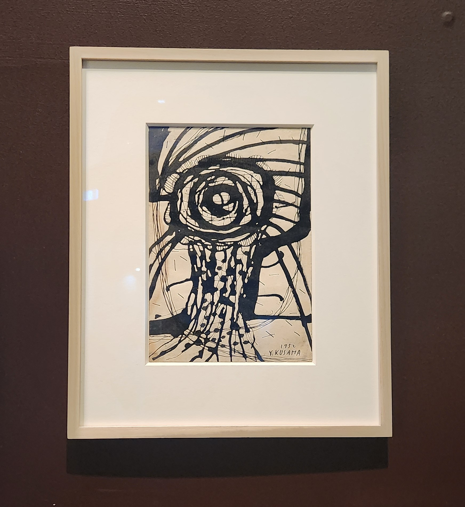

We visited Yayoi Kusama's exhibition at the NGV, she often illustrates swith lines and circles, creating many stunning artworks. Below are some of the artworks that I admire.
Overall, I really enjoyed exploring Yayoi Kusama's work at the NGV. Her distinctive use of circles and irregular lines creates a stunning visuals that oddly promotes geometric harmony, where chaos and order coexist. This exhibition greatly inspired me to incorporate circles and lines into my interactive designs, creating geometric beauties.
Some of my activities are to be decided by a flip of the coin, this includes:
- Take the tram or the train
- To wear jeans or sport pants
- To wear shorts or long sleeves
- To wear black or white
- Drink water or tea
Here are some of the results:
- I took the trams
I really enjoyed these activities, as they offered a fresh perspective of how we live our daily lives. In our digital age determined by algorithm, this allowed me to experience the paradoxical nature of how restrictive algorithm can feel, while simultaneously providing millions of different possibilites.
Using P5.js, I draw a potrait inspired by Kusama's stunning works. Her work often portrays circle in monochromic color, but as I want to add my own elemet into the portrait, I only left the face in simple color, but drew my hair and body with numerous circles of different bright colors
We attempted to learn the power of sorting through a simple exercise where we have to sort our own belongings. For our group, we decided to sort by "How effective it is as a self-defense weapon". We decided that a metalic water bottle would be the best, followed by heavy laptops, then sharp pens and keys.
From this, I have learnt the strength in creative sorting. As different criteria of sorting can lead to infinite combination, ordering and grouping, breathing fresh new ideas to a pre-existing group of entities. While I ultimately did not utilize sorting in my final work, I still find this exercise to be extremely insightful, as it allows me to think outside of the box, and come up with different method of using a pre-existing techniques.